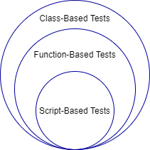

Ways to Write Unit Tests
To guide software development and monitor for regressions in code functionality, you can write unit tests for your programs. The MATLAB® unit testing framework supports three test authoring schemes:
Script-based unit tests: Write each unit test as a separate section of a test script file. You can perform basic qualifications, access the diagnostics that the framework records on test results, refine the test suite by selecting the tests you want to run, and customize the test run by creating and configuring a
TestRunnerobject.Function-based unit tests: Write each unit test as a local function within a test function file. Function-based tests subscribe to the xUnit testing philosophy. In addition to supporting the functionality provided by script-based tests, function-based tests give you access to a rich set of test authoring features. For example, you can use advanced qualification features, including constraints, tolerances, and test diagnostics.
Class-based unit tests: Write each unit test as a
Testmethod within a class definition file. In addition to supporting the functionality provided by script-based and function-based tests, class-based tests provide you with several advanced test authoring features and give you access to the full framework functionality. For example, you can use shared test fixtures, parameterize tests, and reuse test content.

Script-Based Unit Tests
With script-based tests, you can:
Define variables to share among tests or preconditions necessary for tests.
Perform basic qualifications using the
assertfunction. For example, you can useassert(isequal(actVal,expVal))to assert that actual and expected values are equal. (Advanced qualification features are supported only for function-based and class-based tests.)Access test diagnostics recorded by the framework. For more information, see Programmatically Access Test Diagnostics. (Advanced diagnostic actions are supported only for function-based and class-based tests.)
Typically, with script-based tests, you create a test file, and pass the file name
to the runtests function without explicitly
creating a suite of Test elements. If you create an explicit test
suite (using the testsuite function or a method of the
matlab.unittest.TestSuite class),
there are additional features available in script-based testing. With an explicit
test suite, you can:
Refine your suite, for example, using the classes in the
matlab.unittest.selectorsnamespace. (Several of the selectors are applicable only for class-based tests.)Create a
TestRunnerobject and customize it to run your tests. You can add the plugin classes in thematlab.unittest.pluginsnamespace to the test runner.
For more information about script-based tests, see Write Script-Based Unit Tests and Extend Script-Based Tests.
Function-Based Unit Tests
Function-based tests support the functionality provided by script-based tests. In addition, with function-based tests, you can:
Set up the pretest state of the system and return it to the original state after running the test. You can perform these tasks once per test file or once per unit test. For more information, see Write Test Using Setup and Teardown Functions.
Use the fixture classes in the
matlab.unittest.fixturesnamespace (with theapplyFixturemethod) to handle the setup and teardown of frequently used testing actions.Record diagnostic information at a certain verbosity level by using the
logmethod.Use the full library of qualifications in the
matlab.unittest.qualificationsnamespace. To determine which qualification to use, see Table of Verifications, Assertions, and Other Qualifications.Use advanced qualification features, including constraints, actual value proxies, tolerances, and test diagnostics. You can use the classes in the
matlab.unittest.constraintsnamespace and classes deriving from thematlab.automation.diagnostics.Diagnosticinterface in your qualifications.
For more information about function-based tests, see Function-Based Unit Tests and Extend Function-Based Tests.
Class-Based Unit Tests
Class-based tests support the functionality provided by script-based and function-based tests. In addition, with class-based tests, you can:
Use setup and teardown method blocks to implicitly set up the pretest environment state and return it to the original state after running the tests. For more information, see Write Setup and Teardown Code Using Classes.
Share fixtures among classes. For more information, see Write Tests Using Shared Fixtures.
Group tests into categories and then run the tests with specified tags. For more information, see Tag Unit Tests.
Write parameterized tests to combine and execute tests on specified lists of parameters. For more information, see Use Parameters in Class-Based Tests.
Use subclassing and inheritance to share and reuse test content. For example, you can reuse the parameters and methods defined in a test class by deriving subclasses. For more information, see Hierarchies of Classes — Concepts.
For more information about class-based tests, see Class-Based Unit Tests.
Extend Unit Testing Framework
The unit testing framework provides test tool authors the ability to extend test writing through custom constraints, diagnostics, fixtures, and plugins. For example, you can create a custom plugin and use it to extend the test runner when you run your script-based, function-based, or class-based unit tests. For more information, see Extend Testing Frameworks.